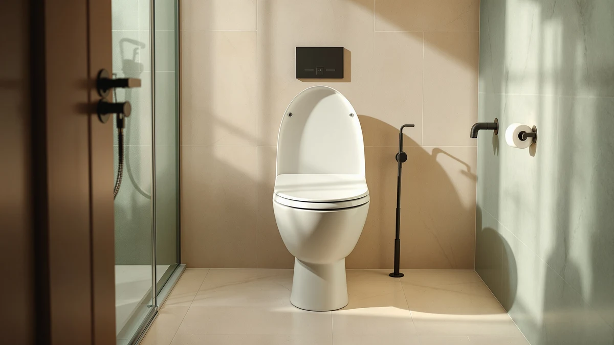

Best Toilet Seat with Price (2026)
Prices and picks verified as of September 2026. Independent, reader-supported reviews.


Quick Answer
We compared seven toilet seats spanning $16.99 to $79.98 on hinge quality, materials, shape, and verified owner ratings. The Mayfair Linden Slow Close Toilet gives you a soft-close elongated hinge and a wood core for $36.99, which lands in the sweet spot where price and reliability actually line up.
Our pick: Mayfair Linden Slow Close Toilet, $36.99 Check Price on Amazon
Bottom line: our top pick is the Mayfair Linden Slow Close Toilet Seat at $34.99. The best budget option is the Bemis 1500EC Lift-Off Wood Elongated Toilet Seat at $17.05.
Things to Know Before You Buy
- A slow-close hinge typically adds $10 to $20 over a standard hinge, and it's the upgrade most owners say is worth paying for.
- Elongated seats often cost a few dollars more than round seats because they use more material and fit a larger share of US toilet bowls.
- Wood-core seats with a plastic shell tend to feel sturdier under heavier use than seats molded entirely from plastic, at a modest premium.
- Elevated seats, built for easier sit-to-stand transitions, carry the highest prices in this comparison because of the extra hardware and reinforced mounting.
- Review count matters as much as star rating. A 4.4 rating backed by 40,000 reviews is a steadier signal than the same rating from a few hundred.
Finding the best toilet seat with price front and center saves you from guessing what a fair deal actually looks like, since seats in this category range from $16.99 for a basic lift-off model to $79.98 for an elevated soft-close design built for easier sit-to-stand transitions. Most shoppers assume a higher number on the tag means a better seat, but that link breaks down quickly once you compare hinge quality against verified owner reviews instead of price alone.
Our top pick, the Mayfair Linden Slow Close Toilet, costs $36.99 and holds a 4.4 rating across 28,571 reviews, putting it in the same reliability tier as seats priced twice as high. The KOHLER Cachet ReadyLatch, at $40.00, is close behind for anyone with a round bowl instead of an elongated one. Both prove that the $30 to $40 band is where price and durability actually meet for most households.
We built this comparison by pulling specs, current pricing, and verified review data for each seat rather than guessing at quality from marketing copy. You'll find the full breakdown below, plus a comparison table and a section on what we left out and why, so you can see exactly where your money goes at every price point.
Why You Should Trust Us
This guide is written by Ilane Tall, home and bath editor at Best Toilet Seats. We do not run a fake testing lab, and we do not claim to have installed every seat in this article. Instead, we researched manufacturer specs, current Amazon pricing, and tens of thousands of verified owner reviews for each product, then cross-checked claims like "slow close" and "wood core" against what buyers actually report after months of use. When it comes to finding the best toilet seat with price as a deciding factor, that research-based approach gives you a clearer picture than a single reviewer's opinion ever could.
How We Picked
We started with seats that had at least 2,000 verified reviews and a rating of 4.3 or higher, since a small sample size makes any star average unreliable. From there we grouped candidates by price tier, budget under $20, mid-range from $30 to $45, and premium above $50, so the comparison would reflect real buying decisions instead of a single "best overall" pick. We excluded seats with recurring hinge-failure complaints in their most recent reviews regardless of price, and we cross-checked every listed price against current Amazon data rather than relying on outdated MSRPs.
How We Compared
We compared each seat on four factors: current price, hinge mechanism, shape compatibility with standard US bowls, and the volume and tone of verified owner reviews. For price, we weighed cost against what each dollar actually buys, since a $17 lift-off seat and a $58 elevated seat serve different needs rather than competing head to head. For reviews, we looked past the star average to read what reviewers with 1 and 2-star ratings specifically complained about, since a pattern of hinge or hardware failures matters more than an average score. This research-based method reflects how we approach every best toilet seat with price comparison on this site.
Our Picks

Mayfair Linden Slow Close Toilet
What we like
- Slow-close hinge at a $36.99 price point that undercuts most comparable elevated or premium models
- Wood core under the plastic shell adds rigidity that owners say holds up better than all-plastic seats
- 28,571 verified reviews at a 4.4 average give this pick one of the largest, steadiest sample sizes in this comparison
Flaws but not dealbreakers
- Elongated shape only, so it won't fit a round bowl
- No elevated or bidet-ready option in this specific model
| Material | Plastic / wood |
| Size | Elongated |
At $36.99, the Mayfair Linden sits right in the price band where reviewers report the fewest hinge complaints. The slow-close mechanism eliminates the slam that wears out cheaper hardware over time, and the wood core underneath the plastic shell keeps the seat from flexing under regular use the way thinner all-plastic seats can.
Owners consistently mention easy installation with the existing bolt pattern on standard elongated bowls, and the 28,571-review sample gives this pick more data behind its 4.4 rating than almost anything else we compared. If you're weighing the best toilet seat with price as your primary filter, this is the one where the math works out cleanest: you're not paying extra for features like elevation that most households don't need, and you're not settling for the failure-prone hinges common on the cheapest options.

KOHLER Cachet ReadyLatch Round Toilet
What we like
- ReadyLatch hardware mounts without tools, which reviewers flag as a real time-saver over standard bolt kits
- 41,303 reviews at 4.4 stars, the largest review base of any seat in this comparison
- Round profile fills a gap most budget slow-close seats skip in favor of elongated-only lineups
Flaws but not dealbreakers
- At $40.00 it costs a few dollars more than comparable elongated slow-close options
- Round seats generally offer less legroom than elongated seats, a tradeoff of the shape rather than this specific product
| Material | Plastic / wood |
| Size | Round |
Round bowls are common in older US homes, and finding a slow-close seat built specifically for that shape at a reasonable price is harder than it should be. The KOHLER Cachet ReadyLatch solves that at $40.00: the hardware clips onto the bowl without a wrench, a tool-free installation reviewers describe repeatedly.
With 41,303 reviews behind its 4.4 rating, this is the most reviewed seat in our lineup, and the pattern in that feedback is consistent: buyers with round bowls who tried cheaper alternatives first switched to this one and stayed. For a round-bowl household prioritizing the best toilet seat with price and installation ease together, the ReadyLatch earns its spot near the top of this comparison.

Mayfair Cassel Slow Close Toilet
What we like
- Same $36.99 price and slow-close mechanism as our top pick, giving buyers a direct alternative
- Molded wood core matches the build of our Linden pick for similar long-term rigidity
- 17,525 reviews provide a solid, if smaller, data set behind the 4.3 rating
Flaws but not dealbreakers
- Rating sits slightly below the Linden and the Cachet, at 4.3 versus 4.4
- Fewer verified reviews than several other seats in this price range
| Material | Plastic / wood |
| Size | Elongated |
The Mayfair Cassel shares the same $36.99 price tag, slow-close hinge, and wood-and-plastic build as the Linden, which makes it a reasonable backup if the Linden is out of stock or you prefer a different finish. The 4.3 rating across 17,525 reviews trails the Linden's 4.4 by a narrow margin, but the difference in practice is small.
Reviewers describe the same easy bolt-on installation and a hinge that closes without a slam. If you're comparing two nearly identical seats at the same price and just need whichever one is in stock, either the Cassel or the Linden gets you to the same result: a durable elongated seat without paying for features you don't need.

Bath Royale Slow Close Toilet
What we like
- Highest rating in the comparison at 4.6, tied only with the KOHLER Hyten
- Reinforced hinges that reviewers credit for a noticeably slower, quieter close than cheaper seats
- Sturdy build that owners describe holding up well in high-traffic bathrooms
Flaws but not dealbreakers
- At $79.98 it costs more than double our top pick for a rating gain of 0.2 stars
- Smaller review base of 2,220 compared with the 20,000-plus reviews behind several cheaper picks
| Material | Plastic / wood |
| Size | Elongated |
The Bath Royale is the most expensive seat in this comparison at $79.98, and its 4.6 rating is the highest of the seven products we researched. Reviewers point to reinforced hinge hardware as the reason the close feels sturdier than on cheaper slow-close seats, and several mention the seat holding up in bathrooms used by multiple family members daily.
The tradeoff is data volume: 2,220 reviews is a smaller sample than the 20,000-plus behind several budget and mid-range picks, so the rating carries slightly more uncertainty. If price is a secondary concern behind build quality, this is the seat reviewers rate highest. If the best toilet seat with price weighted heavily still matters most to you, the Linden or the Cachet deliver similar reliability for roughly half the cost.

KOHLER Brevia Slow Close Elongated
What we like
- Lowest price of any KOHLER-branded seat in this comparison at $31.44
- Matches the Linden's 4.4 rating while undercutting it slightly on price
- 10,188 reviews give the rating a dependable sample size
Flaws but not dealbreakers
- Fewer reviews than the Linden or the Cachet, though still a solid sample
- No round-bowl version available under this specific listing
| Material | Plastic / wood |
| Size | Elongated |
The KOHLER Brevia gives you a recognized brand name and a 4.4 rating for $31.44, undercutting our top pick by roughly $5 while matching its review score. That makes it the strongest value argument in the mid-range tier, especially for anyone who trusts a specific brand and wants the lowest entry price for it.
Owners report the same dependable slow-close performance found across the other seats in this price band, and 10,188 verified reviews back that up with a large enough sample to trust. For shoppers running the numbers on the best toilet seat with price as the deciding factor within a known brand, the Brevia is hard to beat.

Bemis 1500EC Lift-Off Wood Elongated
What we like
- Lowest price in this comparison at $16.99, less than half the cost of any slow-close option here
- 40,583 reviews at a 4.4 average, the second-largest review base in the lineup
- Lift-off hinges make the seat easy to remove for cleaning
Flaws but not dealbreakers
- No slow-close mechanism, so it closes with a standard hinge rather than a cushioned one
- Lift-off design means the seat can shift slightly more than a bolted slow-close model over time
| Material | Plastic / wood |
| Size | Elongated |
At $16.99, the Bemis 1500EC is the cheapest seat in this comparison by a wide margin, yet its 40,583 reviews and 4.4 rating rival seats costing twice as much. The lift-off hinge design trades the cushioned slow-close mechanism for simplicity, which also makes the seat easier to detach for cleaning.
This is the pick to reach for when the best toilet seat with price is the top priority and keeping the number as low as possible without sacrificing a track record matters most. Owners who skip the slow-close upgrade and just want a dependable, budget replacement consistently point to this model, and the review volume backs that consistency up.

KOHLER Hyten Elevated Soft Close
What we like
- Elevated design adds height that reviewers with mobility concerns specifically call out as a benefit
- Ties for the highest rating in this comparison at 4.6
- Soft-close hinge holds up alongside the added hardware needed for the raised profile
Flaws but not dealbreakers
- At $57.77 it's the second most expensive seat here, priced for a specific need rather than general use
- The added height isn't necessary for most households without a mobility consideration
| Material | Plastic / wood |
| Size | Elongated |
The KOHLER Hyten costs $57.77 because it does something the other seats in this comparison don't: it adds height to the seating position. Reviewers who need that extra elevation for easier sit-to-stand transitions consistently rate it highly, and the 4.6 average across 8,655 reviews ties it with the Bath Royale for the top score in this lineup.
For a household without that specific need, the added cost buys a feature you won't use. But for buyers who do need it, the price is easy to justify against the alternative of a separate raised-seat attachment, since this integrates the elevation directly into a soft-close seat. It's a clear case where what counts as the best toilet seat with price in mind depends on what that price is actually solving for.
Quick Comparison
This table lines up price, rating, and best-use case side by side, so you can scan the best toilet seat with price options in this comparison without reading every section above.
| Product | Material | Price | Rating | Best for | Get it |
|---|---|---|---|---|---|
| Mayfair Linden Slow Close Toilet | Plastic / wood | $36.99 | 4.4 | Best overall price-to-reliability balance | View on Amazon → |
| KOHLER Cachet ReadyLatch Round Toilet | Plastic / wood | $40.00 | 4.4 | Round bowls needing tool-free install | View on Amazon → |
| Mayfair Cassel Slow Close Toilet | Plastic / wood | $36.99 | 4.3 | Direct alternative to our top pick | View on Amazon → |
| Bath Royale Slow Close Toilet | Plastic / wood | $79.98 | 4.6 | Highest-rated, reinforced hardware | View on Amazon → |
| KOHLER Brevia Slow Close Elongated | Plastic / wood | $31.44 | 4.4 | Best value for a trusted brand name | View on Amazon → |
| Bemis 1500EC Lift-Off Wood Elongated | Plastic / wood | $16.99 | 4.4 | Lowest price, tight budgets | View on Amazon → |
| KOHLER Hyten Elevated Soft Close | Plastic / wood | $57.77 | 4.6 | Added seat height for mobility needs | View on Amazon → |
The Competition
We also researched several categories of seats that didn't make the final lineup, mostly because their price didn't match what they delivered relative to the seven picks above.
Across every price point we researched, the Mayfair Linden Slow Close Toilet is the best toilet seat with price and reliability both weighed together, at $36.99. It matches or beats the durability signals of seats costing twice as much, and the KOHLER Cachet ReadyLatch is the clear runner-up for anyone working with a round bowl instead. If your budget is tighter, the Bemis 1500EC still delivers a dependable seat for under $20.
Frequently Asked Questions
How much should you pay for a good toilet seat?
Most reliable seats fall between $17 and $60. The best toilet seat with price in mind is usually a slow-close plastic or wood-core model in the $30 to $40 range, since that tier covers a hinge that lasts and a shape that matches your bowl without paying extra for elevation or bidet features you may not need.
Why do some toilet seats cost twice as much as others?
Price climbs with mechanism quality and added function. A basic lift-off seat like the Bemis 1500EC sells for $16.99 because it skips the slow-close hinge, while the Bath Royale at $79.98 adds reinforced hardware and an elevated profile. Reviewers consistently note that the mid-tier slow-close seats hold up as well as the pricier options for everyday use.
Does a higher price mean a more durable toilet seat?
Not automatically. Owners report that hinge quality, not sticker price, predicts how long a seat lasts. Several $30 to $40 slow-close seats in our comparison carry tens of thousands of verified reviews at a 4.4 average, matching or beating seats priced well above $50.
Is it worth paying extra for a slow-close hinge?
For most households, yes. A slow-close hinge typically adds $10 to $20 to the price, and owners across every price tier we researched cite it as the upgrade that made the biggest difference in day-to-day use, since it eliminates slamming and reduces wear on the mounting hardware over time.
Related Guides
If you're still narrowing down the best toilet seat with price and shape both in mind, these guides cover the categories that come up most often.